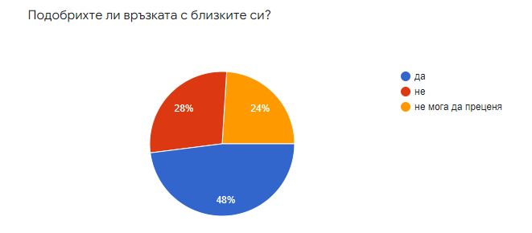
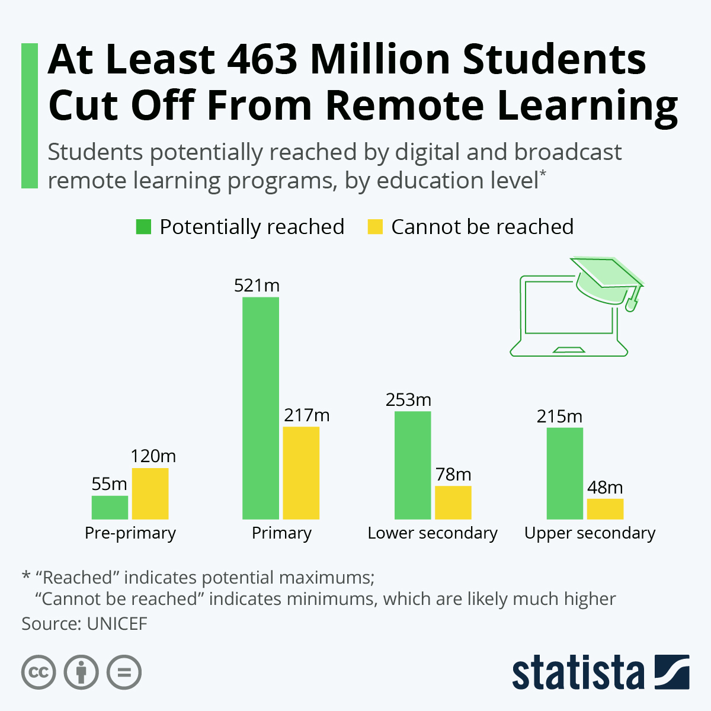
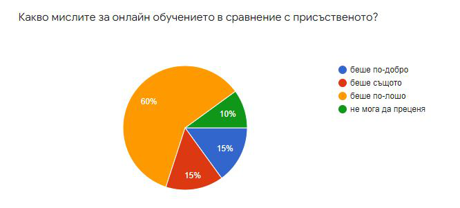
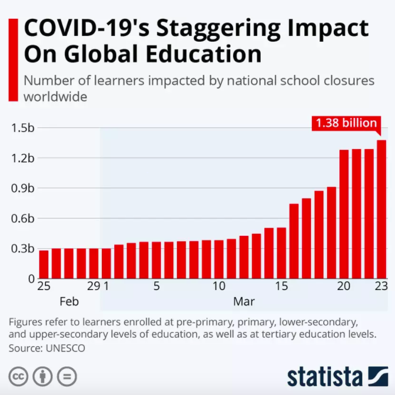
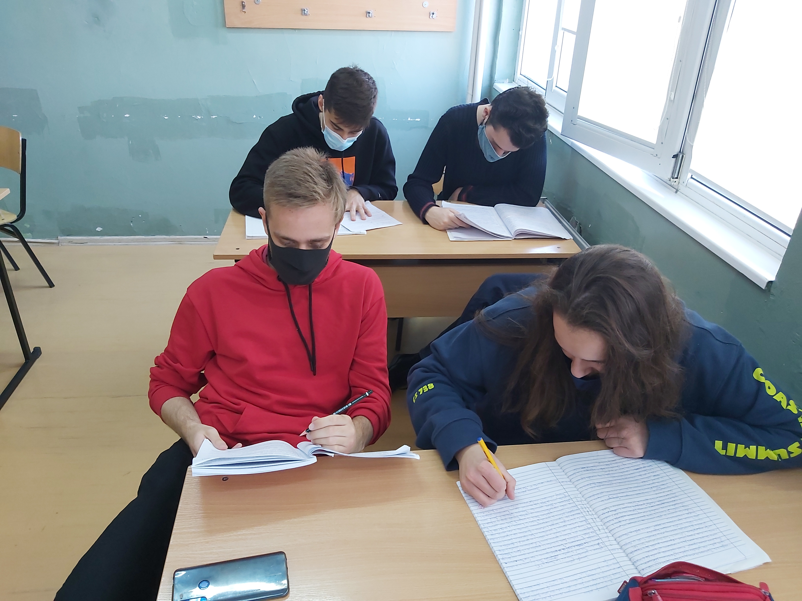
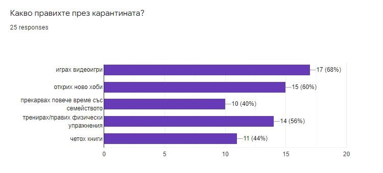
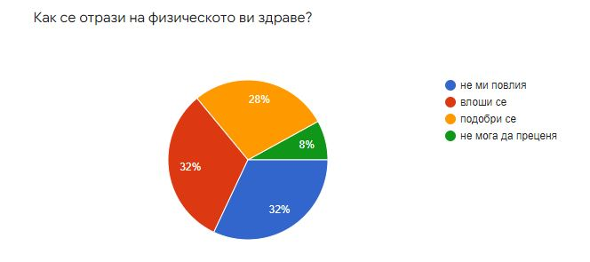
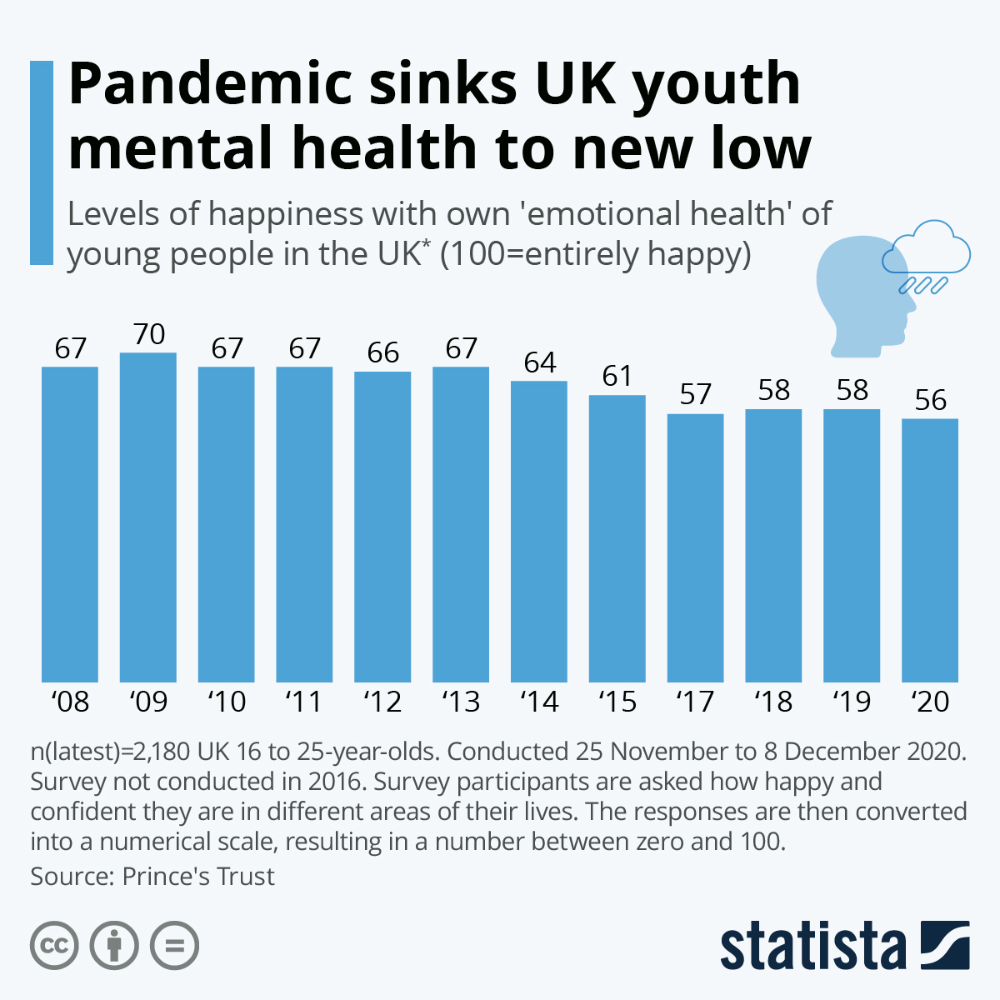
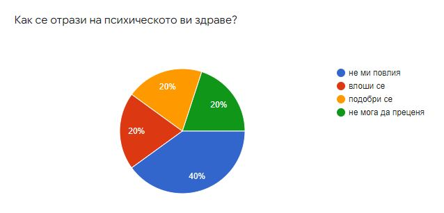

Промяната в начина на живот
Със сигурност целият ни живот се промени заради пандемията, това е факт. Първо бяхме в карантина - за всички беше нещо ново, много хора се настрашиха от всичките новини, мерки и т.н., не можехме да излизаме и да се разхождаме, мерките бяха строги, но за наше добро. Маските се наложиха. После стана дума за ваксините, като не по-късно своето място заеха и зелените сертификати.
На първо време всеки трябваше да се приспособява към новия си начин на живот, защото не се знаеше дали някога щяхме се върнем към нормалния. Едни от най-основните промени бяха в преминаването на всички и всичко онлайн - учене, работа, пазаруване - целият ни живот зависише от Интернет, повече отколкото преди. (По-надолу може да намерите по-подробна информация по тези теми.)
Друга коренно различна промяна в начина ни на живот бяха маските, които сега са неразделна част от нещата, които взимаме набързо от нас, когато излизаме. Поне беше лесно да си ги набавим. Макар и да ни предпазват от микробите във въздуха, следователно от заразяване, за много хора те са причинители на обриви по лицето, алергии и при някои лек недостиг на въздух.
Голям проблем беше и социалната дистанция, която трябваше да се спазва, невъзможността множество хора да се приберат в домовете си заради затварянето на граници и самото стоене, за незнайно колко време, у дома. Хората бяха далеч от любимите си или не можеха да се срещат, но пък за разлика от това, семействата, които са имали възможност толкова дълго време да са заедно, са се сближили, което се доказва от следната статистика, направена от нас:
След това дойде и темата за ваксинацията и зелените сертификати - хората бяха раздвоени, по света почти всички се ваксинираха, докато в България много хора бяха против. Не можеше да се влиза в някои магазини, зали за трениране, ресторанти без наличието на такъв документ.
За щастие вече стъпка по стъпка сякаш отиваме към нормалното, сертификатите отпадат, хората се разхождат, пътуват из чужбина. Не се знае обаче дали може да определим всичко това като нормално, защото дефиницията у нас за "нормално" се е променила.
Промяната в образованието

Онлайн училището "удари" силно и учители и ученици, трябваше бързо адаптиране и възприемане. В началото на всички им беше трудно, но с времето се свикна. По-трудно беше на по-възрастните учители, които не са използвали често съвременните технологии и програми. Най-трудното може би беше образованието да бъде равно достъпно за всички ученици - някои нямаха в притежание нужните технологии или дори достъп до Интернет. По този начин множество ученици нямат възможнастта да продължат своето образование.
За по-големите деца - тинейджърите например, онлайн обучението беше по-лесно в сравненение с присъственото, защото са свикнали да седят пред екраните и да общуват чрез различни приложения онлайн още преди пандемията, но колко ефективно беше за тях е спорно. Направихме запитване до нашите съученици по тази тема и ето ги резултатите:
За съжаление за по-малките беше по-трудно, или по-точно за първокласниците, които се нуждаят от учителя да е пред тях и общуването да се извършва лице в лице, защото те още не разбират толкова много от живота.
Хубавата страна на нещата е, че чрез онлайн обучение повече хора имат достъп до него. Например, човек има възможността да гледа уроците от удобството на своя дом, който може да е и на хиляда километра от учебното заведение. Картинка предластавя резултатите от точно такава статистика.
С връщането на учениците в клас, те затвърдяват своите знания, но обстановката е различна - социалня дистанция, маски, дизенфектация. Както учителите, така и учениците често не могат да се чуват помежду си или им става задушно, но работата продължава въпреки това.
Промяната в работата

Също както при образованието, така беше и с работата - чрез онлайн срещи. Издават се закони за дистанционна работа, за да се намали прекият контакт между колеги и клиенти, както условията и редът са регламентирани лава пета, раздел VІІІ „а“ и „б“ от Кодекса на труда:
Условията и редът за въвеждане на надомна и/или дистанционна работа са регламентирани в глава пета, раздел VІІІ „а“ и „б“ от Кодекса на труда.
Според особеностите на работата в предприятието е възможно работодателят да организира трудовия процес така, че наетите лица да изпълняват дейностите от дома си. Обмислете организация, при която работниците ще извършват дистанционно своята работа чрез използването на информационни технологии. Според спецификата на дейността е възможно работникът да извършва работата си без да има пряк контакт с други работници или клиенти на предприятието (напр. да се организират online срещи, заседания, консултации, услуги за клиенти и т.н.).
Когато прецените, че е възможно работата да се извършва надомно и/или дистанционно е необходимо да:
- Създадете подходящи условия за възлагането и отчитането на работата на работниците и съответната организация за извършването й;
- Осигурите необходимото работно оборудване, съответните материали и средства за извършването й;
- Постигнете съгласие с работника за извършване на надомна и/или дистанционна работа, като за целта се подписва допълнително споразумение.
Работенето от вкъщи не само спестява от ценното време на човек, което се пропилява в пътувания, но и му дава възможност да преоткре себе си - да се захване с нещо ново или да продължава да практикува старо хоби. В долната фигура ще открите резултатие от провена от нас анкета по темата.
Промяната във физическото и психичното здраве
Физическо здраве
Питали ли сте се какво става с един спортист ако спре тренировките? - разбира се губи форма, това се случва с много деца и възрастни, които се обездвижват по време на карантината. Връщането във форма след това е трудно, но някои не се нуждаят от това, защото по време на престоя вкъщи те се опитват да продължават да тренират - чрез правене на упражения, за които домът предразполага.
Обаче всички останали, които са се отдали на почивка, започват да качват килограми, които също трудно се свалят, което се и отразява на психичното им здраве. Здравето на тези хора силно започва да се влошава макар и да не го разбират. След карантината хората се умарят по-бързо, получават задух или не им достигат силите. (Много хора, след леко разпускане на мерките, отиват на разходки в планината - за чистия въздух и за тяхно добро.)
Показаните резултати са от направена от нас анкета, която показва как се е отразила карантината върху физическото здраве на ученици
Психическо здраве
Цялата тази ситуация стресира, както всички около нас, така и самите нас. Психичното ни здраве е засегнато отвсякъде. Много от статистиките сочат към това. Много източници на информация индикират, че най-срещано при хората е да се чувстват стресирани и притеснени, а според международно изследване на деца и възрастни в 21 страни, проведено от УНИЦЕФ и „Галъп“, средно 1 от 5 млади хора между 15 и 24 г. казва, че често се чувства депресиран или има малък интерес към различни дейности. Статистиката за психичното здраве при по-младите в Великобритания доказва това.
В България обаче нещата стоят различно, на повечето хора карантината не се отразява психически толко много. На следващата статистика е показано точно как е повлияла пандемията основно на младежите.
Интервю на ученик от 12. клас
Анонимен
1.Какво представлява пандемията според теб?
- Една ужасна болест, която повлия доста негативно на цялото съществуване.
2.Как промени пандемията живота ти?
- Със сигурност ме затвори вкъщи за много време.
3. А физически как ти повлия?
- Загубих форма, поради това че не можеше да се излиза вече, а преди бях доста активен.
4. А има ли пандемията отражение върху психическото ти здраве?
- Не, по абсолютно никакъв начин не ми повлия.
5. Какви са ползите от пандемията ако има такива?
- Имах възможност да се съсредоточа върху това, което е най-важно за мен и имах повече време да правя това, което искам.
6. Според теб какви предизвикателства постави първоначално пандемията на света?
- Фалшивите новини – всеки си пишеше, каквото иска, а хората се доверяваха твърде много.
7. Имаше ли нещо, което ти липсваше по време на първата карантина?
- Срещата с хората, приятелите, сякаш те ми липсваха най-много.